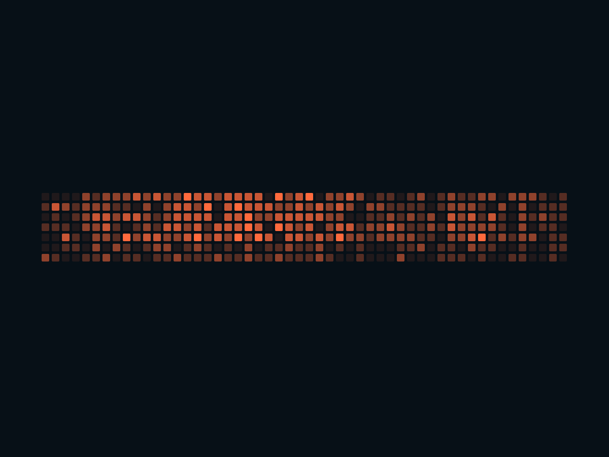
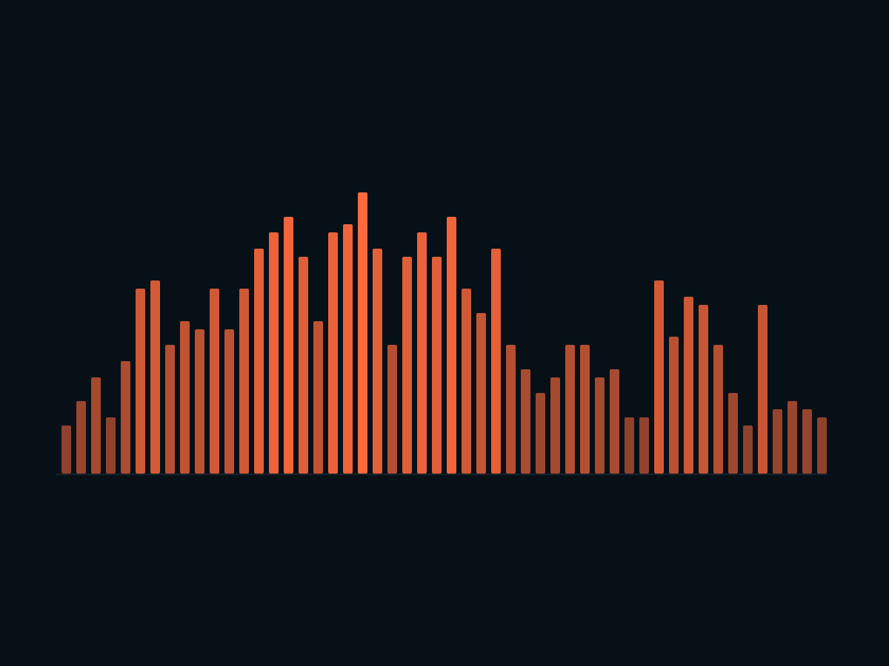

Animated GitHub contribution header
Each of your last 52 weeks becomes one swell in a single SVG. Paste one line into your profile README and it redraws as you commit.
CopySet up your wave beside a live preview
Type a GitHub username, pick a theme and a rider, then set the size and speed. The line under the preview is ready for your README. Read the README
How a year becomes a wave
-
01Reads 52 weeks of your calendar
Timeline reads your public GitHub calendar, or exact daily counts when the deployment has a token.

-
02Adds each week into one contribution total
Days are summed by week. The week still running is left out, so it never shows as a dip.

-
03Smooths the totals into the wave
A soft blur turns spikes into swell, the two ends meet for the loop, and a rider steps along the crest.
How often does the wave change?
Each request draws it again from your calendar. Timeline caches a wave for 30 minutes, and GitHub keeps its own copy of README images for a while on top.
Do I need a GitHub token or an account?
No. Timeline reads the public calendar anyone can see on your profile. A copy you host with a GitHub token reads exact daily counts instead.
Are private contributions counted?
Only when your profile shows them. Turn on private contributions in your GitHub profile settings and they join the wave.
Can I run my own copy of Timeline?
Yes. The renderer is standard-library Python with no dependencies. Deploy the repository to Vercel, or let the GitHub Action commit the SVG to your profile once a day.